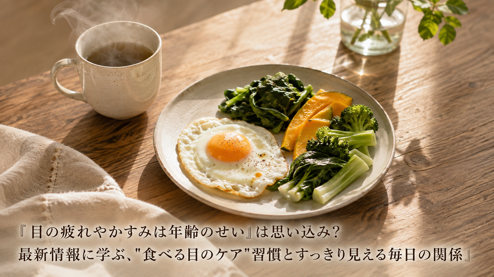

「目の疲れやかすみは年齢のせい」は思い込み？最新情報に学ぶ、"食べる目のケア"習慣とすっきり見える毎日の関係
スマートフォンやパソコンを使う時間が長くなった今、「目が疲れる」「かすむ」といった悩みは、年齢のせいだからと諦めてしまいがちです。しかし、目の健康に関わる栄養素は日々の食事から継続的に摂ることが大切だという考え方が、食品メーカーの取り組みを通じて改めて注目されています。今回は、毎日の食習慣を通じて目をいたわるという視点について、中高年の方にもわかりやすくご紹介します。

知っておきたい3つのポイント
- 「ルテイン」は、瞳の奥にある黄斑や水晶体に存在し、物の見え方や光の刺激から目を保護するのに重要な役割を持つ成分として説明されている。体内でつくることができないため、緑黄色野菜や卵などの食事から継続的に摂取する必要があるとされる。
- 食品メーカーの発表によると、専用の飼料を与えた鶏の卵を活用することで、一般的な卵と比べてルテインを多く含む商品も登場しているという。卵黄由来のルテインは吸収効率の面でも報告があるとされ、日々の食卓に取り入れやすい食材として紹介されている。
- 開発の背景として、スマホやパソコンの使用時間の増加により「目が疲れる」「かすむ」と感じる人が増えている一方、目の健康維持に役立つとされる栄養素は不足しがちだと説明されている。無理なく食べ続けやすい形で栄養を補う工夫が提案されている。
中高年の私たちが日常で意識したいこと
この考え方が伝えているのは、目の疲れやかすみを「年齢のせい」と片づけてしまう前に、日々の食習慣を見直してみるという視点です。目に限らず、体をいたわる食事の工夫として、次のような一般的に知られている習慣が参考になるかもしれません。
- 緑黄色野菜や卵など、身近な食材を毎日の献立に少しずつ取り入れてみる
- スマホやパソコンを長時間使うときは、合間に意識して目を休める時間をつくる
- 特定の食品に偏らず、主食・主菜・副菜のバランスを大切にする
※上記は一般的に知られている生活習慣であり、目の疲れやかすみをはじめとする特定の症状の改善を保証するものではありません。症状が続く場合は、無理をせず医療機関にご相談ください。
本記事は、日本農産工業株式会社が2026年8月6日に発表したプレスリリース「瞳の"ぼやけ・かすみ"に、毎日のたまご習慣。機能性表示食品※『ルテインの力』新発売！ヨード卵・光でおなじみの日本農産工業より8月以降順次発売」の内容を要約・紹介したものです。詳しい内容は出典元をご確認ください。
出典：日本農産工業株式会社 プレスリリース（アットプレス配信、2026年8月6日）
出典：日本農産工業株式会社 プレスリリース（アットプレス配信、2026年8月6日）
本記事は健康に関する一般的な情報提供を目的としたものであり、医学的な診断・治療・予防を目的としたものではありません。記載内容は出典元の見解の要約であり、当社（株式会社BISII）独自の見解や、当社が販売する製品の効果を示すものではありません。気になる症状がある場合は、医療機関へご相談ください。
当社では、日々のコンディショニングをサポートする空間電位ケア機器「DENBA Health」をご紹介しています。
DENBA Healthについて見る最終更新日：2026年8月6日